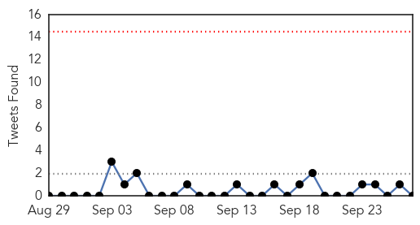
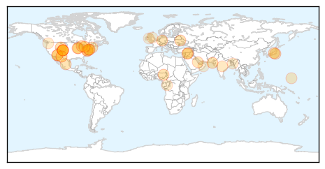

Unknown
30-Day Web Trend
30-Day Twitter Trend
0 alerts, 0 warnings

Article Locations

Article Confidences
Top Articles:
- 0.999
- First case of enterovirus confirmed in Waterloo Region
- 0.998
- New Jersey boy dies from illness
- 0.992
- Online News and Information Portal for Ghanaians In Diaspora
- 0.992
- CDC Test Results Confirm Wyoming Presence of Enterovirus D68, a respiratory illness
- 0.989
- Virus probed in paralysis cases in 9 Colorado kids
- 0.986
- Mystery Virus Causing Paralysis in Children Has CDC Stumped
- 0.976
- Enterovirus EV-D68 reported in Huron County
- 0.953
- Nine Colorado Children Paralyzed From Mystery Virus
- 0.952
- Enterovirus: CDC Investigates Colorado Children For Link Between ED-68 And Paralysis
- 0.941
- Weather change: Sit-ins major contributor in spreading flu, allergies
- 0.925
- Mercer County child dies from suspected respiratory infection
- 0.922
- Illness Causing Paralysis In Colorado Children A Mystery So Far « CBS Denver
- 0.917
- Chicago Tribune
- 0.917
- Chicago Tribune
- 0.917
- Chicago Tribune
- 0.917
- Chicago Tribune
- 0.917
- Chicago Tribune
- 0.917
- Chicago Tribune
- 0.917
- Chicago Tribune
- 0.897
- Virus probed in paralysis cases in 9 Colorado children
- 0.882
- 5 babies born at Providence Memorial Hospital tested positive for tuberculosis
- 0.866
- German test pilot Scherdel steers the solar-powered Solar Impulse 2 aircraft over the Lake Neuchatel during a training flight in Payerne
- 0.866
- Islamic State fighters kill 40 Kurdish militia in past five days
- 0.866
- Air strikes hit Islamic State in eastern Syria
- 0.807
- More cases of respiratory virus confirmed
- 0.789
- Scientists point to risks over rise of much-feared glanders
- 0.764
- Five babies test positive for tuberculosis infection
- 0.709
- ‘Rabies patients don’t get vaccines in time’
- 0.702
- Ministry Of Health Reviews National Drug Policy
- 0.623
- Boil-water order on Mercer Island; all restaurants closed
- 0.615
- Bangladesh successfully reduces rabies related death by 50%
- 0.564
- Congo virus claims another life
- 0.533
- Experts unveil plan to end rabies globally
- 0.528
- 5 babies test positive for TB in Texas exposure
- 0.513
- I WON'T give you antibiotics for that cold: As the NHS urges patients not to rush to their doctor with coughs and sniffles, our resident GP explains why
- 0.510
- Stanford, ValleyCare sign affiliation agreement
Top Tweets:
-
No tweets found for Sep 27, 2014
Mold/Fungal
30-Day Web Trend
30-Day Twitter Trend
0 alerts, 0 warnings

Article Locations


Article Confidences

Top Articles:
-
No articles found for Sep 27, 2014
Top Tweets:
-
No tweets found for Sep 27, 2014